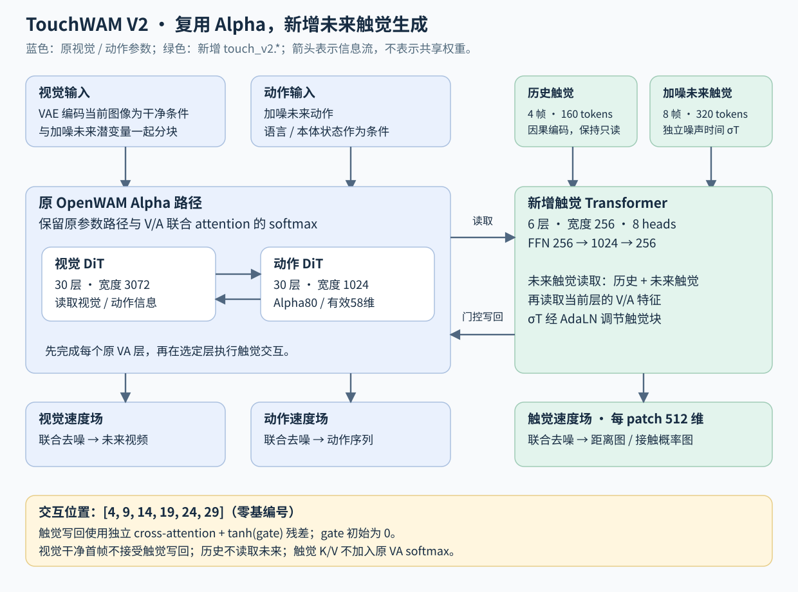
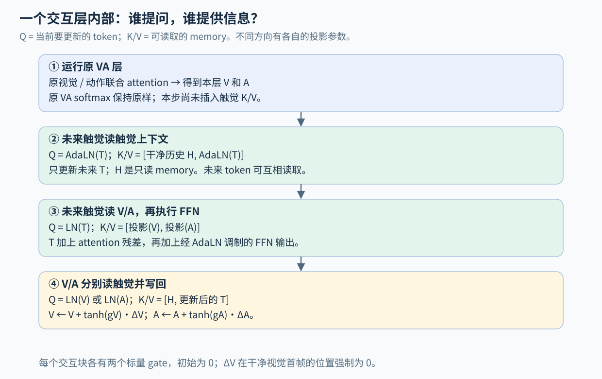
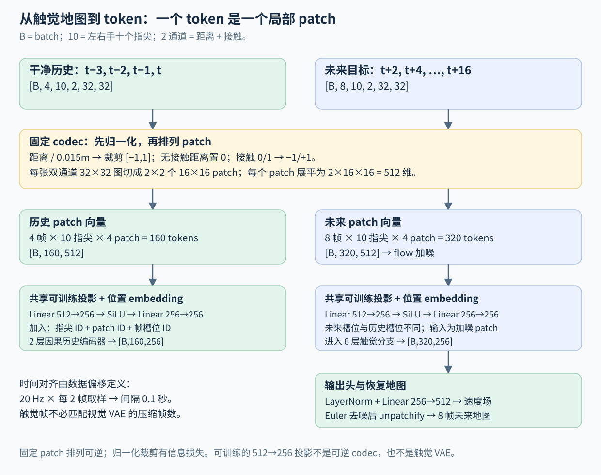
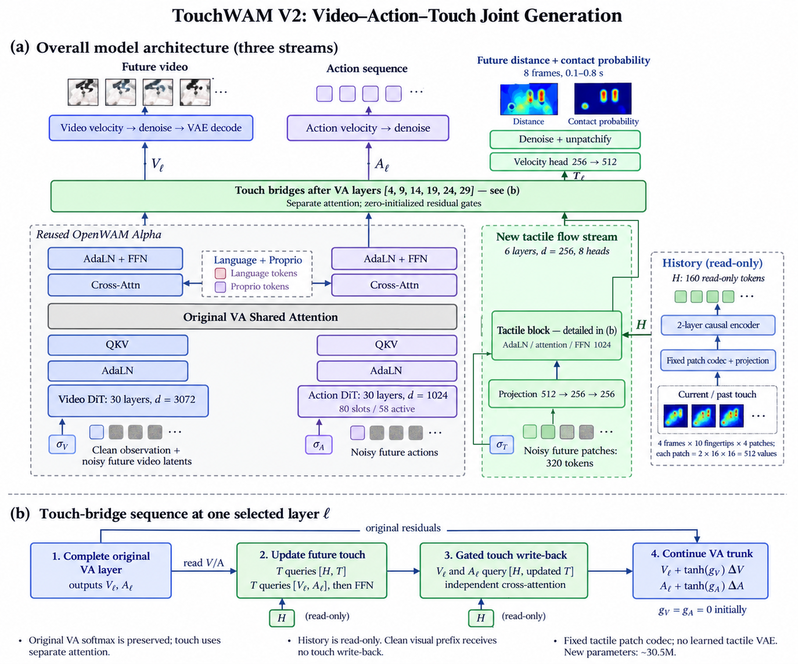
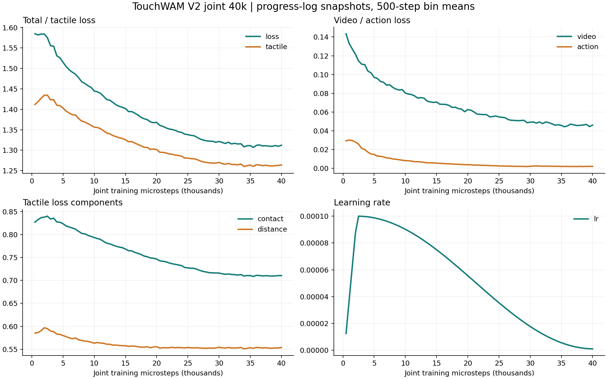

TouchWAM V2｜模型架构、训练与评测（主报告）
从三分支架构到闭环执行，把设计、训练配置、实验结果和预测可视化放在同一处。
更新于 2026-10-19 · 当前模型：V2 joint 40000 · 正式评测：150 / 150 完成
当前结论
当前权重由 V2 new_only 40k 继续进行三分支联合微调得到。罐头 23/50、烤盘 23/50、拼图 5/50；相比 joint 26k，总成功率从 24% 提升到 34%，拼图追平 V1 历史 18k 的 5/50，尚未证明 V2 稳定优于 V1。
仍需解决：147/150 回合存在关节约束违规，拼图成功全部来自训练相关锚点。训练损失下降与短期预测画面相似，均不能替代动作可执行性和未见场景成功率。
观看约一分钟的拼图预测对照 阅读模型设计 · 查看实际训练参数
本页是 V2 的固定主报告，后续更新直接写入本页。模型 checkpoint 与训练策略在实验表中区分；历史报告保持可见，可在 Atlas 报告列表或末尾归档区查看。
全回合滚动预测对照（长时序）
选择一个回合即可连续观看。左侧是当时用于控制的同一次模型推理所预测的图像和触觉，右侧是对应时刻的实际观测；中间小图是该次推理的输入画面。右上角标注回合时间、预测发出时间和预测提前量。
时间对齐与覆盖范围
机器人每 0.8 秒重新规划。每段只取执行期间 +0.2、+0.4、+0.6、+0.8 秒的预测，以 5 fps 按仿真时间接续播放，没有重复播放未来 1.6 秒的重叠窗口。重规划边界仍使用上一轮对该时刻的预测，随后才切换到新预测。首帧 t=0 标为当前图像重建，触觉预测为 N/A；其余帧均为事前预测。
触觉原始预测为 10 Hz，此处与图像对齐采样为 5 Hz；查看全部 8 个未来触觉时刻请使用下方短片和触觉图。预测来源全部为原始评测记录，本次没有重采样。视频速度表示仿真时间，不表示推理墙钟速度。最后不足 0.2 秒的观测未插值，视频最后一帧保留 0.2 秒。
只有各任务前 3 个正式回合保存了逐次预测，故此处共 9 段；150 回合的完整执行录像仍在下方。拼图前 3 回合均为失败，没有这些成功回合的预测记录，不能补成成功对照。接触为概率、距离为几何距离（固定 ±15 mm），不是力。长视频索引 · 当前回合逐帧对齐记录
逐次重规划：预测与真实后续观测
未来图像：+0.2～+1.6 秒；视频首帧为当前画面重建。未来触觉：+0.1～+0.8 秒。超过触觉预测范围或回合结束后的真实观测均标为 N/A。接触概率固定 0～1；距离固定 −15～+15 mm，表示仿真几何距离，不能解释为力。
八个未来触觉时刻：十指接触与距离
点击触觉图可放大。R/L 分别为右/左手；Th/In/Mi/Ri/Li 为拇指/食指/中指/无名指/小指。预测距离在接触概率小于 0.5 的位置为 0。0.8 秒后控制器会重新规划，因此更远图像与实测的差异也包含后续动作变化。触觉 IoU 在预测与实际均无接触时显示 N/A，而非虚高的 100%。
完整任务执行录像
三个相机的真实执行录像，可与上方局部预测对照阅读。成功率使用正式回合的判定，不能仅从画面推断。
模型架构与设计理由
V2 在 OpenWAM Alpha 的视觉 / 动作联合模型上加入未来触觉分支。V1 主要把观测触觉作为条件；V2 同时学习未来图像、动作和触觉，并让触觉特征双向参与生成。
默认模型
| 模块 | 配置 |
|---|---|
| 视觉 DiT | 原 Alpha Wan2.2 TI2V，30 层、3072 维，复用原参数 |
| 动作 DiT | 原 Alpha，30 层、1024 维，复用原参数 |
| 动作／状态 | 沿用 Alpha 80 维槽位；Bench2Dex 有 58 个有效维度 |
| 触觉历史 | 当前及过去 3 帧，10 个指尖，2 通道，32×32 |
| 触觉表示 | 16×16 patch，每个指尖每帧 4 个 token，每个 patch 原始向量 512 维 |
| 历史编码器 | 512→256→256 投影、位置 embedding、2 层因果 Transformer |
| 未来触觉分支 | 6 层，256 维，8 heads，FFN 为 1024 维 |
| 交互位置 | 原 VA 层之后：[4,9,14,19,24,29]，零基编号 |
| 未来时间 | t+2,t+4,…,t+16，共 8 帧；20 Hz 原始数据对应未来 0.1～0.8 秒 |
| 触觉输出 | 距离（米）、接触概率，以及单独的有效性 mask |
历史为 160 个触觉 token，未来为 320 个触觉 token。未来触觉使用自己的噪声时间；不与视觉 VAE 的“四帧压缩”绑定。时间对应由数据行偏移确定。
全尺寸配置的新增参数为 30,522,892（约 3,052 万），均位于 touch_v2.*。
这里的两通道是 distance_along_normal_m 与 contact_mask。距离是射线接触几何，不能解释为标定压力或切向力。
数据流

原视觉／动作之间仍然执行原来的联合 attention。触觉交互使用独立的 attention 与 softmax，没有把触觉 K/V 追加进原来的 softmax。
每个选定层的顺序是：
- 执行原 VA 层，得到视觉与动作特征。
- 未来触觉读取只读历史和其他未来触觉 token。
- 未来触觉读取该层的视觉／动作特征，再通过 FFN。
- 视觉／动作读取历史与更新后的未来触觉，经过
tanh(gate)加回各自残差。
触觉块采用由触觉噪声时间生成的 AdaLN shift/scale。触觉位置编码包含指尖、patch 和时间槽位。
两个写回 gate 初始化为 0。相同原参数、输入及随机噪声下，初始化时的视觉与动作输出与原 Alpha 路径一致。触觉预测损失从第一步即可训练触觉分支；门控打开后，动作／视觉损失也能训练触觉交互路径。

交叉注意力如何连接不同宽度
视觉特征从 3072 维、动作特征从 1024 维分别投影到 256 维，再拼接为 memory；未来触觉提供 Q，视觉 / 动作提供 K 和 V。8 个 head 各处理 32 维，注意力为 softmax(QKᵀ / √32 + mask)V。写回视觉时再从 256 维投影回 3072，写回动作则回到 1024。不同方向使用独立投影参数。
AdaLN 用触觉噪声时间产生 shift / scale，形式为 LN(x) × (1 + scale(σT)) + shift(σT)。FFN 为 256 → 1024 → 256，使用 GELU。历史编码有 2 层，未来分支有 6 层；对应 VA 的交互位置为零基 [4,9,14,19,24,29]。每处两个标量写回 gate，初始化为 0。
零门控用于平稳接入原 Alpha；它不是接触时才启动计算的硬开关。触觉分支从一开始就参与自己的预测损失。未来触觉 K/V 不进入原 VA softmax，保留原 VA 的参数与注意力结构。
为什么本版不训练触觉 VAE
TactilePatchCodec 是固定的归一化与 patch 排列：
- 接触区域距离除以 0.015 米并裁剪到 [-1,1]；无接触区域的距离置零。
- 接触 0/1 映射到 -1/+1。
- 32×32 图划分为四个 16×16 patch，不再进行空间下采样。
- patchify/unpatchify 对归一化后的地图可逆；距离裁剪与无接触区域归零属于预处理约定。
这个固定表示使 flow matching 的目标保持稳定，避免小数据下同时训练一个编码器产生不断变化的目标或潜变量塌缩。模型内 512→256 的投影仍然可训练，输出头预测每个 patch 的 512 维速度。
本版不是 ME-Dex 的预训练触觉自编码器，也不是多传感器通用编码器。将来接入真实光学触觉或其他阵列时，需要新增输入适配与相应监督定义。

训练目标与数据隔离
三种模态独立采样噪声水平：
x_sigma = (1-sigma) * x_clean + sigma * noise
velocity_target = noise - x_clean
loss = lambda_video * L_video + lambda_action * L_action + tactile.loss_weight * L_touch
视频与动作沿用原有损失及 padding mask。触觉采用有效像素上的速度 MSE：
- 接触通道：真实接触像素权重 5，其余有效像素权重 1。
- 距离通道：接触像素权重 1，背景权重 0.1。
- 两通道分别按各自有效权重之和归一化，再相加。
- 缺失传感器与非有限数值不参与触觉损失。
- 触觉噪声使用独立 ActionScheduler 实例；当前触觉损失不再乘 VA 使用的 timestep 权重。
权重 5、0.1、1.0 都是初始实验配置，需要在验证集上选择。
数据加载器把 tactile_maps 和 future_tactile_maps 分开返回。历史不能读到当前时刻之后，未来标签不能跨越轨迹有效片段的边界。模型还检查标签偏移是否与配置一致。
forward() 拒绝原始未来触觉标签，只接受 noisy_tactile。干净历史编码不读取未来；视觉首帧也不接收触觉写回。完全加噪时，替换未来标签不会改变三分支预测输出。
“没有接触”仍然是有效观测，不能与“没有传感器数据”共用一个 mask。
三分支分别维护带噪状态并预测速度场。推理从大 sigma 到小 sigma：x_next = x_now + (sigma_next - sigma_now) × predicted_velocity。未来触觉的监督为动作提供潜在的接触后果信息；它是否提升操作成功率，需要看本报告的闭环对照。
概念总览图

数据与时间对齐
当前实验使用 Bench2Dex Sharpa 三任务数据。文件展开与独立示范的数量要分开理解：共 216 个接受文件、108 个源轨迹组；训练 194 文件 / 97 组，验证 22 文件 / 11 组。划分按源轨迹组进行，左右手等展开文件不能当成独立示范。
| 任务 | 接受文件 | 训练文件 | 验证文件 |
|---|---|---|---|
| 26 · 罐头摆放 | 100 | 90 | 10 |
| 32 · 烤盘准备 | 32 | 28 | 4 |
| 73 · 拼图 | 84 | 76 | 8 |
| 合计 | 216 | 194 | 22 |
三任务等权采样。控制频率 20 Hz，训练窗口为 33 个时刻；当前帧与未来 32 个动作来自同一有效片段。三相机为 cam_stereo_left、cam_wrist_left、cam_wrist_right，模型组合图像大小为高 384 × 宽 320。动作采用 EEF 表达、min-max 归一化，58 个有效维度映射到 Alpha 的 80 维槽位；动作和状态统计必须随 checkpoint 一起部署。
| 模态 | 时间范围 / 帧数 | 说明 |
|---|---|---|
| 图像 | 当前帧 + 未来 0.2、0.4、…、1.6 秒 | video_stride=4，共 9 张输入 / 目标图像；不是 9 个独立 VAE latent 时刻 |
| 动作 | 未来 32 个控制步 | 预测范围 1.6 秒；每次实际执行前 16 步，即 0.8 秒 |
| 触觉历史 | t−3、t−2、t−1、t，共 4 帧 | 原始 20 Hz，时间跨度 0.15 秒；只包含已观测数据 |
| 触觉未来 | t+2、t+4、…、t+16，共 8 帧 | 间隔 0.1 秒，覆盖未来 0.1～0.8 秒 |
触觉为十指尖的双通道 32×32 地图：法向几何距离与接触。它来自仿真几何测量，不能解释为标定力。数据缓存复用 bench2dex_sharpa3_tactile_v1；V2 数据加载器额外读取未来触觉目标。历史、未来、缺失传感器及 padding 分开处理，未来标签不跨轨迹边界。
当前 manifest SHA256：445f1c1416a1ac298b0542755d76a070da9133d7a319c46339f8217ac446ff48。训练数据没有因为此次报告合并而改变。
训练策略、参数与实际过程
三种训练范围
| 策略 | 更新哪些参数 | 当前定位 |
|---|---|---|
new_only |
仅 touch_v2.*：触觉编码、未来分支和交互 |
已执行的早期实验 / 显式消融；视觉、动作主干不适配当前任务 |
action_finetune |
触觉 + 动作 + 本体状态；冻结视觉主干 | 可用的对照配置；此报告没有把它当作已完成的主实验 |
joint_finetune |
视觉 DiT + 整个动作 DiT + 本体状态 + 触觉 | 当前主实验；VAE、文本等预处理编码器保持冻结 |
当前结果对应的实际训练链：官方 Alpha 154k → V2 new_only 40k → V2 joint 40k。 后一阶段重新创建优化器，步数从 0 重新计数。最终文件名中的 40000 是联合微调阶段的 microsteps，不代表整个训练链只有 40000 步。当前代码也支持直接从 Alpha 做 joint 微调，但那不是下方 34% 成功率的权重来源。
联合微调 40k 的实际参数
以下来自该 run 保存的 完整配置 和 启动记录，不是旧报告中的 6000 步预案。
| 项目 | 实际设置 |
|---|---|
| GPU | 4 × NVIDIA A100 80GB；单机四进程 |
| 每卡 batch / 累积 | 4 / 8；全局有效 batch = 4 × 4 × 8 = 128 |
| 训练长度 | 40000 microsteps = 5000 次 optimizer update；最终进度日志 epoch=3 |
| 优化器 | AdamW，betas=(0.9, 0.95)，weight decay=0.01，梯度裁剪 1.0 |
| 学习率 | 所有可训练分支统一峰值 1e−4；5% warmup + cosine，最低 1e−6；无单独 action/video LR |
| 精度 / 并行 | bf16、DeepSpeed ZeRO-2、gradient checkpointing |
| 优化器卸载 | training.offload_optimizer_device=none；关闭 CPU optimizer offload |
| CPU 初始化 | initialize_model_on_cpu=true，仅控制初始化位置，与优化器卸载不同 |
| 训练权重 | video=1，action=1，tactile=1；触觉接触正样本权重 5，距离背景权重 0.1 |
| 保存 | 每 2000 microsteps 保存，保留 20 份权重；未保存完整 optimizer resume 状态 |
| 随机种子 / DataLoader | seed=42；每进程 2 workers |
| 本阶段初始化 | 严格加载 V2 new_only 40000；initialize_touch_from_openwam=false、resume_ckpt_path=null |
实际训练顺序
- 准备数据与统计。 按源轨迹组划分训练 / 验证；核对三相机、EEF 动作槽位、归一化统计及触觉缓存；保持历史 / 未来时间偏移一致。
- 构建 V2 并迁移 Alpha。 保留 Alpha 原参数名称和形状，新增
touch_v2.*。早期 new_only 阶段训练至 40k，作为本次联合微调的初始化。 - 切换 joint_finetune。 全量载入 V2 权重，用新优化器覆盖所有可训练分支；不恢复旧的“只训触觉”优化器。
- 关闭 CPU offload 后重新启动。 2026-10-16 从联合阶段 step 0 开始，使用同一 V2 初始化权重；此前 CPU-offload 的中途 run 没有继续累加到本次 40k。
- 核对真实参数更新。 启动时检查优化器覆盖恰好一次，再验证代表性参数有有限非零梯度和实际变化。视觉、动作、本体与触觉均 verified；冻结的 VAE / 文本参数没有变化。
- 训练、保存、导出。 26k 做中途闭环评测，40k 做最终评测；导出与权重匹配的配置和归一化统计，核对 checkpoint SHA256。
- 部署与记录。 模型服务提供图像 / 动作 / 触觉同一次联合采样；仿真执行动作并记录观测。评测结束后从保存的 latent 解码预测图像，生成本报告短片和长对照。
参数规模与更新证据
| 模块 | 参数量 | 本次是否更新 |
|---|---|---|
| 视觉 DiT | 4,999,787,712 | 是 |
| 动作 DiT | 1,021,035,600 | 是 |
| 本体状态编码器 | 331,776 | 是 |
| V2 触觉模块合计 | 30,522,892 | 是 |
| 总可训练参数 | 6,051,677,980 | 约 6.05B |
| 视觉 VAE | 704,688,668 | 冻结 |
| 文本编码器 | 5,680,910,336 | 冻结 |
参数更新审计 的 status=verified、optimizer_coverage_exact=true。代表性参数检查证明各分支确实参与更新，但不表示逐一检查了每个参数元素的变化。
训练耗时、速度与曲线
本次从 2026-10-16 12:15 开始，至 2026-10-18 03:16 左右完成（北京时间）。最终进度条记录 39:01:28、3.51 秒 / microstep，包含训练过程中的保存等开销。关闭 offload 后的启动检查在 step 8～48 测到 2.8 秒 / microstep，仅是短窗口，不能直接当作全程平均。该检查记录峰值 allocated 51.52 GiB、reserved 68.54 GiB，也是启动期观察值。
早先 CPU-offload run 曾出现约 13～15 秒 / step；更换 run 前后批次与运行阶段不同，不能把全部差值都归因于一个参数。当前实际配置已经确认没有 CPUAdam / CPU optimizer offload。

曲线从训练进度条按 microstep 去重，取每 500 microsteps 的快照均值；这是训练日志趋势，不是验证集曲线。曲线数据 CSV · 提取方法与日志 SHA256 · 最终日志片段
最终打印值：total=1.2954，video=0.0454，action=0.0012，tactile=1.2488，其中 contact=0.7059、distance=0.5429。它们是最后一次日志快照，不是整轮平均。不同模态的量纲、归一化和权重不同，不能仅凭 tactile 数值较大断定它主导了所有梯度，也不能以 loss 下降代替闭环成功率。
评测协议与结果对照
统一阅读口径
正式评测为三任务各 50 回合，共 150 回合，none profile；使用固定 Bench2Dex 锚点，包含与训练集相关的初始化。成功率采用环境的 stable-success 判定，不是论文四种泛化 profile 的宏平均，也不是纯未见场景成功率。smoke 的 64 步链路测试不计入正式成功率。
模型位于 tianji-4090 服务端，4090 执行 Bench2Dex 仿真；同步 10 步去噪，预测 32 个动作，每次执行前 16 个。控制 20 Hz、物理步 60 Hz，任务预算沿用专家时长 ×1.5。最终正式评测约从 2026-10-18 10:38 至 2026-10-19 01:17（北京时间）；这段墙钟时间与视频里的仿真时间不同。
| 实验 | 罐头 /50 | 烤盘 /50 | 拼图 /50 | 总成功 /150 | 总成功率 |
|---|---|---|---|---|---|
| OpenWAM 复现 11k，无触觉（历史） | 26 | 20 | 2 | 48 | 32% |
| V1 11k（历史） | 24 | 17 | 3 | 44 | 29.3% |
| V2 new_only 32k | 0 | 0 | 0 | 0 | 0% |
| V2 joint 26k | 23 | 13 | 0 | 36 | 24% |
| V2 joint 40k（当前） | 23 | 23 | 5 | 51 | 34% |
| V1 历史 best 18k | 22 | 23 | 5 | 50 | 33.3% |
new_only、joint 的原始统计分别见 32k、26k、40k。OpenWAM 和 V1 数据来自历史实验归档，属于历史参考点，不是与 V2 同更新预算的架构消融；joint 40k 还包含前面的 new_only 初始化阶段。表中最多只能说：joint 40k 比本次 joint 26k 增加 15 次成功，并在拼图上追平 V1 的 5/50；尚不能证明 V2 稳定优于 V1。
当前模型的可靠性与分组
| 任务 | 成功率 | Wilson 95% 区间 | 有关节约束违规的回合 | IK 求解失败目标 |
|---|---|---|---|---|
| 罐头 | 46% | 33.0%～59.6% | 47 / 50 | 0 |
| 烤盘 | 46% | 33.0%～59.6% | 50 / 50 | 0 |
| 拼图 | 10% | 4.3%～21.4% | 50 / 50 | 0 |
共 147/150 回合记录关节约束违规；这与“IK 求解失败为 0”是不同统计，不能互相抵消。拼图 5 个成功回合也有约束违规记录。
拼图按初始化来源分组：训练相关锚点 5/38，验证锚点 0/4，未用于训练的锚点 0/8。小样本区间较宽，且目前成功全部来自训练相关锚点，因此泛化问题仍然存在。
为什么加入触觉后未稳定改善拼图
已有证据
- 早期训练范围不完整。 new_only 只更新新增触觉模块，冻结视觉与动作主干；它与直接完整复现 OpenWAM、或 V1 联合微调并不是相同训练条件。V2 new_only 32k 的三任务正式评测均为 0。
- 联合训练确实改善了当前 run。 joint 26k 的拼图为 0/50，joint 40k 为 5/50；说明“V2 拼图始终无法完成”不符合目前证据，但还没有超过 V1 的历史 5/50。
- 接触预测仍不干净。 长对照中可观察到预测接触分散、背景响应和距离噪声；这是样例观察，不等于已经计算了全评测集的触觉准确率。
- 动作执行与泛化存在问题。 拼图所有回合都出现约束违规，且成功集中于训练相关锚点。需要分别检查动作可执行性和任务泛化，不能把失败全部归因于触觉预测误差。
需要对照才能确认的原因
未来触觉的辅助目标可能与动作学习产生梯度冲突，稀疏接触可能使背景预测占据较多容量，小数据也可能无法充分训练新增分支；这些都是待验证的机制。当前没有“相同初始化、相同更新预算、相同 seeds，仅开关未来触觉”的完整消融，所以不能给某一个机制下确定结论。
下一步应优先做匹配预算的 OpenWAM / V1 / V2 对照，固定动作归一化与执行接口，比较接触 / 距离权重及触觉写回强度；同时统计约束违规出现的时刻，并单独报告未见锚点结果。可视化用于定位过程，实验表用于判断收益，两者不能替代。
推理实现、复现与资料
推理循环和输出
一次观测调用中，历史触觉只编码一次，并在本次三分支 Euler 去噪中复用；触觉采用动作的 sigma 日程。视觉、动作和触觉是同一次联合采样的输出。返回未来触觉形状为 [8,10,2,32,32]，offsets 为 [2,4,6,8,10,12,14,16]，距离单位米、接触通道为概率。
未来传感器的有效位置由历史可用性决定，不读取真实未来有效性。全部触觉缺失时写回旁路、未来结果标为无效，不能用填零冒充“预测无接触”。本次配置不启用旧 V/A-only DiT cache 或 compile；并未实现基于接触阶段的硬开关、候选动作搜索或 MPC。
当前权重身份
- 文件：
checkpoint_step_40000.safetensors，joint_finetune。 - SHA256：
55ff467387fb8f0d6b1de7e46f01d20d675b379b72ab334674dc4d5a3ee01dee。 - 训练目录：
OpenWAM/outputs/bench2dex_sharpa3_touchwam_v2_joint_gpuopt_4gpu_40k/2026-10-16_12-15-16。 - 评测目录：
OpenWAM/outputs/eval_touchwam_v2_joint_step40000_none50_20261018。 - 本报告固定入口：
reports/touchwam-v2/index.html；后续更新在同一入口完成。
训练启动示例
在训练服务器执行；以下复现的是“已有 V2 new_only 40k → joint 微调”的配置。执行前应确保初始化 checkpoint、数据缓存及输出磁盘可用。
cd /data_all/intern10/workspace/TouchWAM/OpenWAM
export CUDA_VISIBLE_DEVICES=0,1,2,3
export NPROC_PER_NODE=4
bash scripts/run_bench2dex_touchwam_v2_joint.sh \
training.finetune_ckpt_path=/data_all/intern10/workspace/TouchWAM/OpenWAM/outputs/bench2dex_sharpa3_touchwam_v2_4gpu_40k/2026-10-14_14-09-02/checkpoint_step_40000.safetensors \
training.offload_optimizer_device=none \
training.resume_ckpt_path=null \
training.max_steps=40000 \
training.batch_size=4 \
training.gradient_accumulation_steps=8 \
training.save_steps=2000 \
dataloader.tactile_cache_root=/data_all/intern10/workspace/TouchWAM/OpenWAM/assets/benchmark_data/bench2dex_sharpa3_tactile_v1 \
training.output_path=outputs/touchwam_v2_joint_reproduction
当次完整启动脚本 · 保存的配置 · 启动速度 / 显存核验 · 训练源码哈希清单
基础代码提交上有工作区修改，不能把一个 Git commit 当作完整复现快照。官方 Alpha 初始化的名称 / 形状检查覆盖 2089 个原参数张量，不是全尺寸数值推理验证。2026-10-12 的实现记录报告了 66 项测试通过；它是当时的历史代码验证记录，不是此次整理报告重新运行的训练验证。
Alpha 名称与形状审计 · 当前 V2 实现说明 · 早期实现源码快照（2026-10-13） · 评测计划 · 逐次预测索引 · 长对照索引 · 使用 README
后续扩展边界
当前触觉表示固定为十指、双通道几何地图，尚不能直接混合真实光学触觉、压力阵列和其他传感器。多来源预训练需要独立明确传感器适配、单位、空间布局、同步、缺失模态和监督含义；仅统一图片大小不等于统一物理语义。
历史资料归档（可选）
主报告已合并 V2 的有效设计、训练、结果与可视化。以下文件仅用于追溯当时记录，其中的状态和结论可能已过时；仍可在 Atlas 的报告列表直接选择查看。